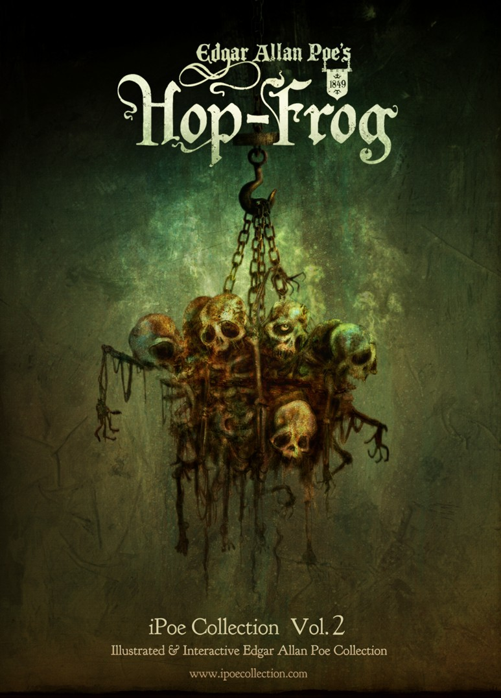

Jamás he conocido a nadie tan dispuesto a celebrar una broma como el rey. Parecía vivir tan sólo para las bromas. La manera más segura de ganar sus favores consistía en narrarle un cuento donde abundaran las chuscadas, y narrárselo bien. Ocurría así que sus siete ministros descollaban por su excelencia como bromistas. Todos ellos se parecían al rey por ser corpulentos, robustos y sudorosos, así como bromistas inimitables. Nunca he podido determinar si la gente engorda cuando se dedica a hacer bromas, o si hay algo en la grasa que predispone a las chanzas; pero la verdad es que un bromista flaco resulta una rara avis in terris.
Por lo que se refiere a los refinamientos —o, como él los denominaba, los «espíritus» del ingenio—, el rey se preocupaba muy poco. Sentía especial admiración por el volumen de una chanza, y con frecuencia era capaz de agregarle gran amplitud para completarla. Las delicadezas lo fastidiaban. Hubiera preferido el Gargantúa de Rabelais al Zadig de Voltaire; de manera general, las bromas de hecho se adaptaban mejor a sus gustos que las verbales.
En los tiempos de mi relato los bufones gozaban todavía del favor de las cortes. Varias «potencias» continentales conservaban aún sus «locos» profesionales, que vestían traje abigarrado y gorro de cascabeles, y que, a cambio de las migajas de la mesa real, debían mantenerse alerta para prodigar su agudo ingenio.
Nuestro rey tenía también su bufón. Le hacía falta una cierta dosis de locura, aunque más no fuera, para contrabalancear la pesada sabiduría de los siete sabios que formaban su ministerio... y la suya propia.
Su «loco», o bufón profesional, no era tan sólo un loco. Su valor se triplicaba a ojos del rey por el hecho de que además era enano y cojo. En aquella época los enanos abundaban en las cortes tanto como los bufones, y muchos monarcas no hubieran sabido cómo pasar los días (los días son más largos en la corte que en cualquier otra parte) sin un bufón con el cual reírse y un enano de quien reírse. Pero, como ya lo he hecho notar, en el noventa y nueve por ciento de los casos los bufones son gordos, redondeados y de movimientos torpes, por lo cual nuestro rey se congratulaba de tener en Hop-Frog (que así se llamaba su bufón) un triple tesoro en una sola persona.
Creo que el nombre de Hop-Frog no le fue dado al enano por sus padrinos en el momento del bautismo, sino que recayó en su persona por concurso general de los siete ministros, dado que le era imposible caminar como el resto de los mortales 5. En efecto, Hop-Frog sólo podía avanzar mediante un movimiento convulsivo —algo entre un brinco y un culebreo—, movimiento que divertía interminablemente al rey y a la vez, claro está, le servía de consuelo, aunque la corte, a pesar del vientre protuberante y el enorme tamaño de la cabeza del rey, lo consideraba un dechado de perfección.
Pero si la deformación de las piernas sólo permitía a Hop-Frog moverse con gran dolor y dificultad en un camino o un salón, la naturaleza parecía haber querido compensar aquella deficiencia de sus miembros inferiores concediéndole una prodigiosa fuerza en los brazos, que le permitía efectuar diversas hazañas de maravillosa destreza, siempre que se tratara de trepar por cuerdas o árboles. Y mientras cumplía tales ejercicios se parecía mucho más a una ardilla o a un mono que a una rana.
No puedo afirmar con precisión de qué país había venido Hop-frog. Se trataba, sin embargo, de una región bárbara de la que nadie había oído hablar, situada a mucha distancia de la corte de nuestro rey. Tanto Hop-Frog como una jovencita apenas menos enana que él (pero de exquisitas proporciones y admirable bailarina) habían sido arrancados por la fuerza de sus respectivos hogares, situados en provincias adyacentes, y enviados como regalo al rey por uno de sus siempre victoriosos generales.
No hay que sorprenderse, pues, de que en tales circunstancias se creara una gran intimidad entre los dos pequeños cautivos. Muy pronto llegaron a ser amigos entrañables. Hop-Frog, a pesar de sus continuas exhibiciones, no era nada popular, y no podía, por tanto, prestar mayores servicios a Trippetta; pero ésta, con su gracia y exquisita belleza —pese a ser una enana—, era admirada y mimada por todos, lo cual le daba mucha influencia y le permitía ejercerla en favor de Hop-Frog, cosa que jamás dejaba de hacer.
En ocasión de una gran solemnidad oficial (no recuerdo cuál) el rey resolvió celebrar un baile de máscaras. Ahora bien, toda vez que en la corte se trataba de mascaradas o fiestas semejantes, se acudía sin falta a Hop-Frog y a Trippetta, para que desplegaran sus habilidades. Hop-Frog, sobre todo, tenía tanta inventiva para montar espectáculos, sugerir nuevos personajes y preparar máscaras para los bailes de disfraz, que se hubiera dicho que nada podía hacerse sin su asistencia.
Llegó la noche de la gran fiesta. Bajo la dirección de Trippetta habíase preparado un resplandeciente salón, ornándolo con todo aquello que pudiera agregar éclat a una mascarada. La corte ardía con la fiebre de la expectativa. Por lo que respecta a los trajes y los personajes a representar, es de imaginarse que cada uno se había aprontado convenientemente. Los había que desde semanas antes preparaban sus rôles, y nadie mostraba la menor señal de indecisión... salvo el rey y sus siete ministros. Me es imposible explicar por qué precisamente ellos vacilaban, salvo que lo hicieran con ánimo de broma. Lo más probable es que, dada su gordura, les resultara difícil decidirse. A todo esto el tiempo transcurría; entonces, como postrer recurso, mandaron llamar a Trippetta y a Hop-Frog.
Cuando los dos pequeños amigos obedecieron al llamado del rey, lo encontraron bebiendo vino con los siete miembros de su Consejo; el monarca, sin embargo, parecía de muy mal humor. No ignoraba que a Hop-Frog le desagradaba el vino, pues producía en el pobre lisiado una especie de locura, y la locura no es una sensación agradable. Pero el rey amaba sus bromas y le pareció divertido obligar a Hop-Frog a beber y (como él decía) «a estar alegre».
—Ven aquí, Hop-Frog —mandó, cuando el bufón y su amiga entraron en la sala—. Bébete esta copa a la salud de tus amigos ausentes... (Hop-Frog suspiró)... y veamos si eres capaz de inventar algo. Necesitamos personajes... personajes, ¿entiendes? Algo fuera de lo común, algo raro. Estamos cansados de hacer siempre lo mismo. ¡Ven, bebe! El vino te avivará el ingenio.
Como de costumbre, Hop-Frog trató de contestar con una chanza a las palabras del rey, pero sus esfuerzos fueron inútiles. Sucedió que aquel día era el cumpleaños del pobre enano, y la orden de beber a la salud de «sus amigos ausentes» hizo acudir las lágrimas a sus ojos. Grandes y amargas gotas cayeron en la copa mientras la tomaba, humildemente, de manos del tirano.
—¡Ja, ja, ja! —rió éste con todas sus fuerzas—. ¡Ved lo que puede un vaso de buen vino! ¡Si ya le brillan los ojos!
¡Pobre infeliz! Sus grandes ojos fulguraban en vez de brillar, pues el efecto del vino en su excitable cerebro era tan potente como instantáneo. Dejando la copa en la mesa con un movimiento nervioso, Hop-Frog contempló a sus amos con una mirada casi insana. Todos ellos parecían divertirse muchísimo con la «broma» del rey.
—Y ahora, ocupémonos de cosas serias —dijo el primer ministro, que era un hombre muy gordo.
—Sí —aprobó el rey—. Ven aquí, Hop-Frog, y ayúdanos. Personajes, querido muchacho. Personajes es lo que necesitamos... ¡Ja, ja, ja!
Y como sus palabras pretendían ser una nueva chanza, los siete las celebraron a coro.
También rió Hop-Frog, aunque débilmente y como si estuviera distraído. —Vamos, vamos —dijo impaciente el rey—. ¿No tienes nada que sugerirnos? —Estoy tratando de pensar algo nuevo —repuso vagamente el enano, a quien el vino había confundido por completo.
—¡Tratando! —gritó furioso el tirano—. ¿Qué quieres decir con eso? ¡Ah, ya entiendo! Estás melancólico y te hace falta más vino. ¡Toma, bebe esto! —y llenando otra copa la alcanzó al lisiado, que no hizo más que mirarla, tratando de recobrar el aliento—. ¡Bebe, te digo —aulló el monstruo—, o por todos los diablos que...!
El enano vaciló, mientras el rey se ponía púrpura de rabia. Los cortesanos sonreían bobamente. Pálida como un cadáver, Trippetta avanzó hasta el sitial del monarca y, cayendo de rodillas, le imploró que dejara en paz a su amigo.
Durante unos instantes el tirano la miró lleno de asombro ante tal audacia. Parecía incapaz de decir o de hacer algo... de expresar adecuadamente su indignación. Por fin, sin pronunciar una sílaba, la rechazó con violencia y le tiró a la cara el contenido de la copa.
La pobre niña se levantó como pudo y, sin atreverse a suspirar siquiera, volvió a su sitio a los pies de la mesa.
Durante casi un minuto reinó un silencio tan mortal que se hubiera escuchado caer una hoja o una pluma. Aquel silencio fue interrumpido por un áspero y prolongado rechinar, que parecía venir de todos los ángulos de la sala al mismo tiempo.
—¿Qué... qué es ese ruido que estás haciendo? —preguntó el rey, volviéndose furioso hacia el enano.
Este último parecía haberse recobrado en gran medida de su embriaguez y, mientras miraba fija y tranquilamente al tirano en los ojos, respondió:
—¿Yo? Yo no hago ningún ruido. —Parecía como si el sonido viniera de afuera —observó uno de los cortesanos—. Se me ocurre que es el loro de la ventana, que se frotaba el pico contra los barrotes de la jaula.
—Eso ha de ser —afirmó el monarca, como si la sugestión lo aliviara grandemente—. Pero hubiera jurado por el honor de un caballero que el ruido lo hacía este imbécil con los dientes.
Al oír tales palabras el enano se echó a reír (y el rey era un bromista demasiado empedernido para oponerse a la risa ajena), mientras dejaba ver unos enormes, poderosos y repulsivos dientes. Lo que es más, declaró que estaba dispuesto a beber todo el vino que quisiera su majestad, con lo cual éste se calmó en seguida. Y luego de apurar otra copa sin efectos demasiado perceptibles, Hop-Frog comenzó a exponer vivamente sus planes para la mascarada.
—No puedo explicarme la asociación de ideas —dijo tranquilamente y como si jamás en su vida hubiese bebido vino—, pero apenas vuestra majestad empujó a esa niña y le arrojó el vino a la cara, apenas hubo hecho eso, y en momentos en que el loro producía ese extraño ruido en la ventana, se me ocurrió una diversión extraordinaria... una de las extravagancias que se hacen en mi país, y que con frecuencia se llevan a cabo en nuestras mascaradas. Aquí será completamente nuevo. Lo malo es que hace falta un grupo de ocho personas, y...
—¡Pues aquí estamos! —exclamó el rey, riendo ante su agudo descubrimiento de la coincidencia—. ¡Justamente ocho: yo y mis ministros! ¡Veamos! ¿En qué consiste esa diversión?
—La llamamos —repuso el enano— los Ocho Orangutanes Encadenados, y si se la representa bien, resulta extraordinaria.
—Nosotros la representaremos bien —observó el rey, enderezándose y alzando las cejas.
—Lo divertido de la cosa —continuó Hop-Frog— está en el espanto que produce entre las mujeres.
—¡Magnífico! —gritaron a coro el monarca y su Consejo.
—Yo os disfrazaré de orangutanes —continuó el enano—. Dejadlo todo por mi cuenta.
El parecido será tan grande, que los asistentes a la mascarada os tomarán por bestias de verdad... y, como es natural, sentirán tanto terror como asombro.
—¡Exquisito! —exclamó el rey—. ¡Hop-Frog, yo haré un hombre de ti!
—Usaremos cadenas para que su ruido aumente la confusión. Haremos correr el rumor de que os habéis escapado
en masse de vuestras jaulas. Vuestra majestad no puede imaginar
el efecto que en un baile de máscaras causan ocho orangutanes encadenados, los que todos
toman por verdaderos, y que se lanzan con gritos salvajes entre damas y caballeros delicada
y lujosamente ataviados. El contraste es inimitable.
—¡Así debe ser! —declaró el rey, mientras el Consejo se levantaba precipitadamente (se hacía tarde) para poner en ejecución el plan de Hop-Frog.
La forma en que procedió éste a fin de convertir a sus amos en orangutanes era muy sencilla, pero suficientemente eficaz para lo que se proponía. En la época en que se desarrolla mi relato los orangutanes eran poco conocidos en el mundo civilizado, y como las imitaciones preparadas por el enano resultaban suficientemente bestiales y más que suficientemente horrorosas, nadie pondría en duda que se trataba de una exacta reproducción de la naturaleza.
Ante todo, el rey y sus ministros vistieron ropa interior de tejido elástico y sumamente ajustado. Se procedió inmediatamente a untarlos con brea. Alguien del grupo sugirió cubrirse de plumas, pero esta idea fue rechazada al punto por el enano, quien no tardó en convencer a los ocho bromistas, mediante demostración práctica, que el pelo de orangután puede imitarse mucho mejor con lino. Una espesa capa de este último fue por tanto aplicada sobre la brea. Buscóse luego una larga cadena. Hop-Frog la pasó por la cintura del rey y la aseguró; en seguida hizo lo propio con otro del grupo, y luego con el resto. Completados los preparativos, los integrantes se apartaron lo más posible unos de otros, hasta formar un círculo, y, para dar a la cosa su apariencia más natural, Hop-Frog tendió el sobrante de la cadena formando dos diámetros en el círculo, cruzados en ángulo recto, tal como lo hacen en la actualidad los cazadores de chimpancés y otros grandes monos en Borneo.
El vasto salón donde iba a celebrarse el baile de máscaras era una estancia circular, de techo muy elevado y que sólo recibía luz del sol a través de una claraboya situada en su punto más alto. De noche (momento para el cual había sido especialmente concebido dicho salón) se lo iluminaba por medio de un gran lustro que colgaba de una cadena procedente del centro del tragaluz, y que se hacía subir y bajar por medio de un contrapeso, según el sistema corriente; sólo que, para que dicho contrapeso no se viera, hallábase instalado del otro lado de la cúpula, sobre el techo.
El arreglo del salón había sido confiado a la dirección de Trippetta; pero, por lo visto, ésta se había dejado guiar en ciertos detalles por el más sereno discernimiento de su amigo el enano. De acuerdo con sus indicaciones, el lustro fue retirado. Las gotas de cera de las bujías (que en esos días calurosos resultaba imposible evitar) hubiera estropeado las ricas vestiduras de los invitados, quienes, debido a la multitud que llenaría el salón, no podrían mantenerse alejados del centro, o sea debajo del lustro. En su reemplazo se instalaron candelabros adicionales en diversas partes del salón, de modo que no molestaran, a la vez que se fijaban antorchas que despedían agradable perfume en la mano derecha de cada una de las cariátides que se erguían contra las paredes, y que sumaban entre cincuenta y sesenta.
Siguiendo el consejo de Hop-Frog, los ocho orangutanes esperaron pacientemente hasta medianoche, hora en que el salón estaba repleto de máscaras, para hacer su entrada. Tan pronto se hubo apagado la última campanada del reloj, precipitáronse —o, mejor, rodaron juntos, ya que la cadena que trababa sus movimientos hacía caer a la mayoría y trastrabillar a todos mientras entraban en el salón.
El revuelo producido en la asistencia fue prodigioso y llenó de júbilo el corazón del rey. Tal como se había anticipado, no pocos invitados creyeron que aquellas criaturas de feroz aspecto eran, si no orangutanes, por lo menos verdaderas bestias de alguna otra especie. Muchas damas se desmayaron de terror, y si el rey no hubiera tenido la precaución de prohibir toda portación de armas en la sala, la alegre banda no habría tardado en expiar sangrientamente su extravagancia. A falta de medios de defensa, produjese una carrera general hacia las puertas; pero el rey había ordenado que fueran cerradas inmediatamente después de su entrada, y, siguiendo una sugestión del enano, las llaves le habían sido confiadas a él.
Mientras el tumulto llegaba a su apogeo y cada máscara se ocupaba tan sólo de su seguridad personal (pues ahora había verdadero peligro a causa del apretujamiento de la excitada multitud), hubiera podido advertirse que la cadena de la cual colgaba habitualmente el lustro, y que había sido remontada al prescindirse de aquél, descendía gradualmente hasta que el gancho de su extremidad quedó a unos tres pies del suelo.
Poco después el rey y sus siete amigos, que habían recorrido haciendo eses todo el salón, terminaron por encontrarse en su centro y, como es natural, en contacto con la cadena. Mientras se hallaban allí, el enano, que no se apartaba de ellos y los incitaba a continuar la broma, se apoderó de la cadena de los orangutanes en el punto de intersección de los dos diámetros que cruzaban el círculo en ángulo recto. Con la rapidez del rayo insertó allí el gancho del cual colgaba antes el lustro; en un instante, y por obra de una intervención desconocida, la cadena del lustro subió lo bastante para dejar el gancho fuera del alcance de toda mano y, como consecuencia inevitable, arrastró a los orangutanes unos contra otros y cara a cara.
A esta altura, los invitados iban recobrándose en parte de su alarma y comenzaban a considerar todo aquello como una estupenda broma, por lo cual estallaron risas estentóreas al ver la desgarbada situación en que se encontraban los monos.
—¡Dejádmelos a mi!
—gritó entonces Hop-Frog, cuya voz penetrante se hacía
escuchar fácilmente en medio del estrépito—, ¡Dejádmelos a mí! ¡Me parece que los
conozco! ¡Si solamente pudiera mirarlos más de cerca, pronto podría deciros quiénes son!
Trepando por sobre las cabezas de la multitud, consiguió llegar hasta la pared, donde se apoderó de una de las antorchas que empuñaban las cariátides. En un instante estuvo de vuelta en el centro del salón y, saltando con agilidad de simio sobre la cabeza del rey, encaramóse unos cuantos pies por la cadena, mientras bajaba la antorcha para examinar el grupo de orangutanes y gritaba una vez más:
—¡Pronto podré deciros quiénes son!
Y entonces, mientras todos los presentes (incluidos los monos) se retorcían de risa, el
bufón lanzó un agudo silbido; instantáneamente, la cadena remontó con violencia a una
altura de treinta pies, arrastrando consigo a los aterrados orangutanes, que luchaban por
soltarse, y los dejó suspendidos en el aire, a media altura entre la claraboya y el suelo.
Aferrado a la cadena, Hop-Frog seguía en la misma posición, por encima de los ocho
disfrazados, y, como si nada hubiese ocurrido, continuaba acercando su antorcha fingiendo averiguar de quiénes se trataba.
Tan estupefacta quedó la asamblea ante esta ascensión, que se produjo un profundo silencio. Duraba ya un minuto, cuando fue roto por un áspero y profundo rechinar, semejante al que había llamado la atención del rey y sus consejeros después que aquél hubo arrojado el vino a la cara de Trippetta. Pero en esta ocasión no cabía dudar de dónde procedía el sonido. Venía de los dientes del enano, semejantes a colmillos de fiera; rechinaban, mientras de su boca brotaba la espuma, y sus ojos, como los de un loco furioso, se clavaban en los rostros del rey y sus siete compañeros.
—¡Ah, ya veo! —gritó, por fin, el enfurecido bufón—. ¡Ya veo quiénes son!
Y entonces, fingiendo mirar más de cerca al rey, aplicó la antorcha a la capa de lino
que lo envolvía y que instantáneamente se llenó de lívidas llamaradas. En menos de medio
minuto los ocho orangutanes ardían horriblemente entre los alaridos de la multitud, que los
miraba desde abajo, aterrada, y que nada podía hacer para prestarles ayuda.
Por fin, creciendo en su violencia, las llamas obligaron al bufón a encaramarse por la cadena para escapar a su alcance; al ver sus movimientos, la multitud volvió a guardar silencio. El enano aprovechó la oportunidad para hablar una vez más:
—Ahora veo claramente quiénes son esos hombres —dijo—. Son un gran rey y sus siete consejeros privados. Un rey que no tiene escrúpulos en golpear a una niña indefensa, y sus siete consejeros, que consienten ese ultraje. En cuanto a mí, no soy nada más que Hop-Frog, el bufón... y ésta es mi última bufonada.
A causa de la alta combustibilidad del lino y la brea, la obra de venganza quedó cumplida apenas el enano hubo terminado de pronunciar estas palabras. Los ocho cadáveres colgaban de sus cadenas en una masa irreconocible, fétida, negruzca, repugnante. El bufón arrojó su antorcha sobre ellos y luego, trepando tranquilamente hasta el techo, desapareció a través de la claraboya.
Se supone que Trippetta, instalada en el teado del salón, fue cómplice de su amigo en su ígnea venganza, y que ambos escaparon juntamente a su país, ya que jamás se los volvió a ver.
La historia de hop-frog se desarrolla en un tiempo en el que existían los reyes y con ello los bufones que en realidad eran nada más que sus ayudantes, aunque al final de cuentas les servirán de diversión a los reyes y a todo su consejo, se dice que a el rey a su consejo les encantaba realizar bromas a todos los del Reino ya que era para ellos muy gratificante el jugarle esta clase de bromas a todos, nos cuenta que hop-frog era muy bueno para planear fiestas y que siempre andaba con una compañera de su pais, este era un enano.
La historia gira en torno a qué en cier ta ocasión el rey tendría una fiesta y para ello pide ayuda a hop-frog para que organice dicha fiesta pero sucede que el rey golpea a la compañera de hop-frog y este solo se encarga de vengarse del rey.
Glosario de Términos